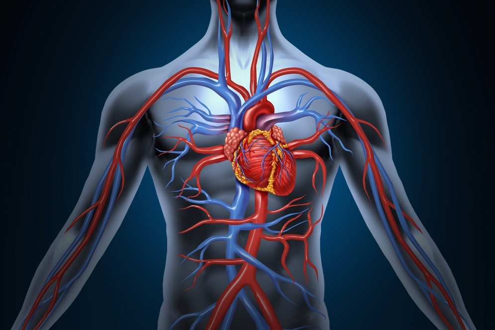

Defination
"Vascular Medicine" redirects here. For the journals, see Angiology (journal) and Vascular Medicine (journal).
Angiology (from Greek ἀγγεῖον, angeīon, "vessel"; and -λογία, -logia) is the medical specialty dedicated to studying the circulatory system and of the lymphatic system, i.e., arteries, veins and lymphatic vessels.[1]
In the UK, this field is more often termed angiology, and in the United States the term vascular medicine is more frequent. The field of vascular medicine (angiology) is the field that deals with preventing, diagnosing and treating vascular and blood vessel related diseases.
diseases
Arterial diseases include the aorta (aneurysms/dissection) and arteries supplying the legs, hands, kidneys, brain, intestines. It also covers arterial thrombosis and embolism; vasculitides; and vasospastic disorders. Naturally, it deals with preventing cardiovascular diseases such as heart attack and stroke. Venous diseases include venous thrombosis, chronic venous insufficiency, and varicose veins. Lymphatic diseases include primary and secondary forms of lymphedema. It also involves modification of risk factors for vascular disease like high cholesterol, high blood pressure.
Cardiovascular risk factors such high blood pressure, elevated cholesterol and others fall under the specialty of vascular medicine.
Overview
ournal focuses to present the effective diagnosis, treatment and long-term management of vascular and cardiovascular diseases besides invasive and non invasive vascular techniques. By this published work, the angiologists, researchers, physicians and scientists get support for their extensive medical research which helps to improve health and quality of life.
The articles published in Journal of Angiology and Vascular Surgery are freely available for the readers. For the dissemination of this research work, the journal is indexed in Google scholar, Directory of Research Journals Indexing (DRJI), Scientific Indexing Services (SIS), J-Gate, and also a member of Crossref, ORCID and Publons. Angiologists, physicians, scientists, researchers and readers advance their work, by accessing these articles. Accessing and downloading the articles will increase the journal impact factor which is the calculating factor of the journal quality.